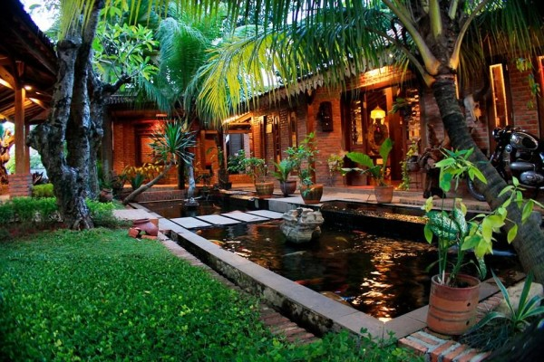
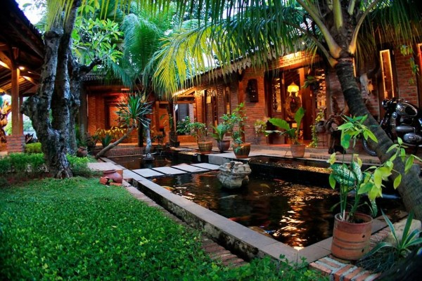
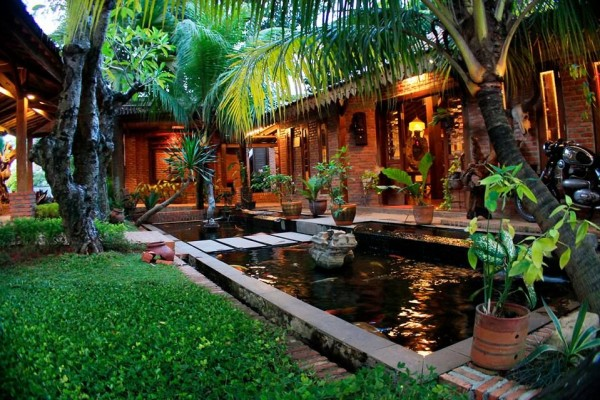

Restoran Ndeso adalah salah satu restoran yang berada di kota Rembang Jawa Tengah. Restoran ini didirikan pada tahun 2010 oleh Destio Wahyu dan telah sukses menarik banyak pelanggan. Restoran ini menyajikan suasana seperti di pedesaan yang menyejukkan hati dan tentu saja sejuk. Menu makanan di restoran ini juga berbagai macam mulai dari nila bakar, gurame bakar, seafood, ayam bakar, dan masih banyak lagi. Fasilitas di restoran ini juga bisa dibilang cukup lengkap karena sudah ada kamar mandi yang bersih dan nyaman, tempat cuci tangan, free wifi, tempat parkir yang luas, dan juga tempat bermain anak. Restoran ini selalu ramai pengunjung apalagi saat hari libur atau akhir pekan karena memang masakan di restoran ini bisa dikatakan terenak sekabupaten Rembang, dan juga pelayanan yang sangat baik disini.
